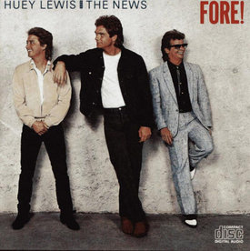

Fore! (album)
From The Giant: The Definitive Obey Giant Site
A 1986 album by Huey Lewis & the News.
[edit] Tracklisting
1. Jacobs Ladder
2. Stuck With You
3. Whole Lotta Lovin'
4. Doing It All For My Baby
5. Hip To Be Square
6. I Know What I Like
7. I Never Walk Alone
8. Forest For The Trees
9. Naturally
10. Simple As That
Review posted by Daniel J. Hamlow at Amazon:
It took three years for Huey Lewis and the News to come out with the followup to their multiplatinum hit album Sports, Fore! Inbetween that time, though the News made their first #1 hit with "The Power of Love" from Back To The Future, where Lewis had a cameo playing a high school music teacher holding band auditions. The tempo of Fore! is mostly mid-paced compared the power-pounding rockers of Sports, plus there's more of a polish to the songs. But some songs seem like excerpts from yuppie middle-class suburban family life, so more serious social commentary here.
Take for example the acapella doowop of "Naturally," where despite hardships, things will eventually work out: "you know that love is a struggle/and only the strong survive/so it's up to me and you/to do what we've got to do to keep our love alive." And the philosophical "Simple As That" traces the life history of the working man, from working all day, paying bills, fighting the high cost of living, trying to get a loan for the house, and seeing one's children married with their own children, with a humorous aside of being left with one's wife, dog, and cat.
Fore! though yielded two more #1 hits for HL&N. In fact it would be their last two #1s. The first was "Stuck With You," three weeks on the top spot and on the adult contemporary charts, a leisure, mid-paced Beach Boys-type pop song with doowop harmonies and organ in the chorus. A catchy song about deciding to stick together despite the ups and downs and thoughts of breaking up, with some pithy reasons of being bound by the same address and phone number, it was a wise choice to be the first single from Fore!
The second was the Bruce Hornsby-penned "Jacob's Ladder," a commentary on religious hucksters, be it the man chasing the fan dancer in Birmingham per the song, or televangelists. "Hey mister I'm not in a hurry and I don't wanna be like you/All I want from tomorrow is to get it better than today," sings Lewis, true to his artistic temperament. Well, given the performance of the singles, Fore! did make it better than Sports.
The #3 single and #1 mainstream rock hit "Hip To Be Square" is the most energetic song on Fore! This song about letting go of one's renegade ways, such as cutting one's hair and playing it straight, may raise eyebrows to those wanting to be different, but when he mentions working out and watching what he eats, well, when one things about it, eating and living healthy seems renegade in today's "supersize me" fast-food society, so maybe this song embraces some hip values after all. The News has football players singing backups on this song, BTW.
If "I Want A New Drug" was slowed down, it'd probably sound close to the #9 "I Know What I Like." "Doing It All For My Baby" was the fifth single and peaked at #6. A rocking piano and guitar ballad with backing from the Tower of Power horns section, this is a tribute to soulful '60s and '70s music. With the silly Frankenstein-influenced music video overplayed on MTV, it didn't take me too long to get sick of this song, but now, it's like welcoming an old friend back to the fold.
"Whole Lotta Lovin',"-no, not the Fats Domino song, but an original by Lewis, owes a nod back to '50s style Elvis or Little Richard style rock, and darned if Lewis doesn't get the genre nailed down! The best non-single here, with Huey doing a harmonica solo in the middle. Huey plays counselor here in displaying old-fashioned wisdom in the good-natured "Forest For The Trees," where things are that fuzzy gray and not black and white, and a need for sitting back and thinking things out will do a world of good: "and if you're not afraid to open your eyes, you may be pleasantly surprised things are never as bad as they seem. You just gotta learn to see the forest for the trees."
Fore! is not only a successful Huey Lewis/News album with a combination of hit singles and sobering but ultimately optimistic commentary on the struggles of life in the 80's.
[edit] Charts(from Wikipedia)
Album - Billboard (North America)
| Year | Chart | Position |
|---|---|---|
| 1987 | The Billboard 200 | 1 |
Singles - Billboard (North America)
| Year | Single | Chart | Position |
|---|---|---|---|
| 1986 | "I Know What I Like" | Mainstream Rock Tracks | 25 |
| 1986 | "Jacob's Ladder" | Mainstream Rock Tracks | 10 |
| 1986 | "Stuck With You" | Adult Contemporary | 1 |
| 1986 | "Stuck With You" | Mainstream Rock Tracks | 2 |
| 1986 | "Stuck With You" | The Billboard Hot 100 | 1 |
| 1986 | "Whole Lotta Lovin'" | Mainstream Rock Tracks | 38 |
| 1986 | "Hip to Be Square" | Adult Contemporary | 20 |
| 1986 | "Hip to Be Square" | Mainstream Rock Tracks | 1 |
| 1986 | "Hip to Be Square" | The Billboard Hot 100 | 3 |
| 1987 | "Jacob's Ladder" | Adult Contemporary | 17 |
| 1987 | "Jacob's Ladder" | Mainstream Rock Tracks | 19 |
| 1987 | "Jacob's Ladder" | The Billboard Hot 100 | 1 |
| 1987 | "I Know What I Like" | Adult Contemporary | 30 |
| 1987 | "I Know What I Like" | The Billboard Hot 100 | 9 |
| 1987 | "Doing It All for My Baby" | Adult Contemporary | 2 |
| 1987 | "Doing It All for My Baby" | The Billboard Hot 100 | 6 |
The cover to Fore! serves as the model for the image on Shepard's 1999 print Huey Lewis.
|  |
{kind=link}
{kind=link}
© Copyright |
|---|
| This page contains an image or images of drawings, paintings, photographs, prints, or other two-dimensional works of art, for which the copyright is presumably owned by either the artist who produced the image, the person who commissioned the work, or the heirs thereof. It is believed that the use of low-resolution images of works of art for critical commentary on the work in question, the artistic genre or technique of the work of art, or the school to which the artist belongs on the English-language website thegiant.org, hosted on servers in the United States, qualifies as fair use under United States copyright law. |